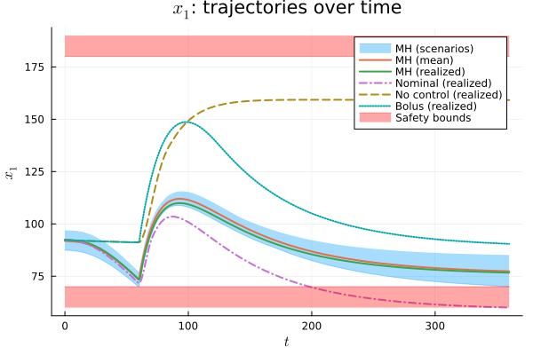

Optimal Control
This page demonstrates the full inference-to-control pipeline on a single representative run: Bayesian inference of model parameters and latent states from infrequent measurements, followed by scenario-based optimal control using the posterior samples. The complete script is available at experiments/optimal_control.jl.
For the model definition, cost functional, constraints, and baseline description, see the Experiments Overview.
Data Generation and Inference
Unlike the sampler tuning experiment, which uses fixed ground-truth parameters, this script draws the true parameters and initial state from the prior distributions to simulate a randomly sampled patient:
theta_true = rand(MvNormal(theta_mean, theta_cov))
x_init_true = rand(MvNormal(x_init_mean, Diagonal(x_init_var)))The ground-truth trajectory is simulated over the training window (6 am–6 pm), and $M = 200$ noisy glucose measurements are generated at random times. During the training window, a simple bolus insulin input proportional to the meal size is applied. The proportionality constant is computed from the true parameters to produce physiologically plausible training data — importantly, these true parameters are not available to the sampler or the controller.
The staged MH sampler is then run to produce $K = 100$ posterior samples with a thinning factor of $k_d = 20$:
K = 100
k_d = 20
K_b = 200
M_chunk = 5
K_stage = 500
alpha = 0.85
MH_samples, acceptance_ratio, runtime_sampling = staged_ODE_MH(
u_t_bolus, t_m, y, (-T_train, 0.0),
K, K_b, k_d,
f_theta!, g_theta!, log_pdf_w_theta,
log_pdf_theta, theta_0,
log_pdf_x_init, x_init_0,
proposal_z_cov_0, M_chunk, K_stage, alpha;
ODE_solver=ODE_solver, ODE_solver_opts=ODE_solver_opts
)Formulating the Scenario OCP
The cost function and constraints are defined as standard Julia functions. The cost penalizes glucose deviations from the reference and control effort, while the constraints enforce glucose safety bounds and insulin pump limits:
const G_REF = 80.0
const W_G = 1.0
const W_Gf = 10.0
const W_U = 1e-3
c(u, x, t) = W_G * (x[1] - G_REF)^2 + W_U * (u[1])^2
c_f(x) = W_Gf * (x[1] - G_REF)^2
h_scenario(u, x, t) = [x[1] - G_MAX; G_MIN - x[1]]
h_u(u, t) = [u .- U_MAX; U_MIN .- u]These definitions are independent of the uncertainty representation and can be adapted to other systems.
Solving the Scenario OCP
Given the posterior samples, the scenario OCP is solved by discretizing the dynamics over the prediction horizon and optimizing a single control trajectory jointly across all $K$ scenarios. Internally, solve_MH_OCP propagates each scenario forward using RK4 and enforces shared control inputs, yielding a control policy that explicitly accounts for the inferred uncertainty.
H = 6 * 60.0 # 6-hour prediction horizon
N = Int(H / rk4_step_size) # discretization points
U_MH, X_MH, t_grid, J_MH, solve_successful_MH, iterations_MH, runtime_optimization_MH =
solve_MH_OCP(
MH_samples, n_u, f_theta, g_theta,
H, N, c, c_f, h_scenario, h_u;
solver_opts=Ipopt_options, rk4_step_size=rk4_step_size
)The script uses IPOPT with HSL linear solvers (MA57) when available, falling back to MUMPS otherwise:
Ipopt_options = Dict(
"max_iter" => 5000, "tol" => 1e-6, "acceptable_tol" => 1e-4,
"linear_solver" => "mumps", "hessian_approximation" => "exact"
)
if hsl_available
Ipopt_options["hsllib"] = HSL_jll.libhsl_path
Ipopt_options["linear_solver"] = "ma57"
endEvaluation
The optimized control trajectory is applied to the true system (unknown to the controller) and the resulting glucose trajectory is compared against several baselines.
Baselines
The script evaluates four strategies on the same patient realization:
- MH-scenario OCP — the proposed method, optimizing over $K = 100$ posterior scenarios.
- Nominal + EKF OCP — parameters fixed at the prior geometric mean, latent state estimated via an extended Kalman filter, and the OCP solved for this single nominal model.
- No control — no insulin is delivered during the control horizon.
- Simple bolus — the same heuristic bolus rule used during the training window.
Results

The figure shows the glucose trajectories over the 6-hour control horizon for one representative run. The MH-scenario planner is represented by its mean prediction (solid orange), the envelope of the 100 posterior scenarios (blue band), and the realized trajectory when the MH control input is applied to the true system (solid green). For comparison, the figure also shows the realized trajectories under the Nominal + EKF baseline (dashed purple), without any insulin delivery (dashed brown), and with the simple bolus rule (dotted green). The red bands indicate the prescribed safety bounds (70–180 mg/dL).
The MH-scenario controller anticipates the meal at 7 pm by increasing insulin delivery beforehand, causing glucose to decrease slightly before the meal and thereby reducing the magnitude of the subsequent spike. After the meal, glucose returns toward the target of 80 mg/dL. Throughout the entire horizon, the realized trajectory remains within the safety bounds and inside the scenario envelope, indicating that the scenario-based predictions provide a reliable foundation for control.
In contrast, the Nominal + EKF baseline produces less accurate predictions and consequently violates the safety constraints. Toward the end of the horizon, glucose falls to approximately 60 mg/dL, entering a hypoglycemic range. This illustrates the risks of nominal-model strategies in safety-critical settings where reliable uncertainty quantification is essential.
For a statistical evaluation across 100 independent patient realizations, see the Monte Carlo Study.